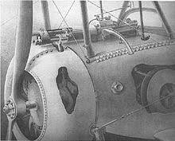

Mis au point par Roland Garros et Alkan lors de la première guerre mondiale, cette évolution s'inscrit dans l'évolution des combats aériens. La mitraillette se situe dans l'axe de l'avion, ce qui permet de juste pointer l'avion lui même.
Le but est d'enlever le blindage de l'hélice, et de tirer à travers sans l'abîmée.
Raymond Saulnier imagine un dispositif de tir synchronisé avec l'hélice en contrôlant les mouvements de la culasse et du percuteur de la mitrailleuse en fonction du régime de rotation du moteur. Sauf que manque la mitrailleuse Hotchkiss, utilisée par l'armée française, se révèle capricieuse et fonctionne de façon aléatoire. Une hélice blindée est alors mise en place.
Roland Garros améliore ce dispositif: placée sur l'aile dans le champ de vision du pilote, la mitrailleuse tire dans l'axe de l'avion et les balles passent à travers l'hélice dont les pâles sont protégées par un déviateur.

Ce dispositif est encore améliorer par les allemands. Après avoir été touché par une balle, Garros est obligé de se poser sur le sol allemand. Fais prisonnier, les soldats allemands envoie le système à Fokker, un ingénieur hollandais, pour tenter de lui venir en aide dans le développement de ce système. Ce dernier analyse la mitrailleuse française pour essayer de l'adapter aux avions allemands sauf que les balles germaniques sont trop dures en raison de leur alliage ce qui fait qu'elles endomagent l'hélice. L'ingénieur hollandais réussira à mettre au point en trois jours seulement un tir synchronisé entre l'hélice grâce au crantage entre le moteur et la détente pour déclencher le tir le tout associé à un jeu sur la pression des gaz du moteur pour réguler la cadence de l'arme. Le concept séduit de nombreux constructeurs et il parviendra à mettre en place jusqu'à trois mitrailleuses fixes sur un avion.